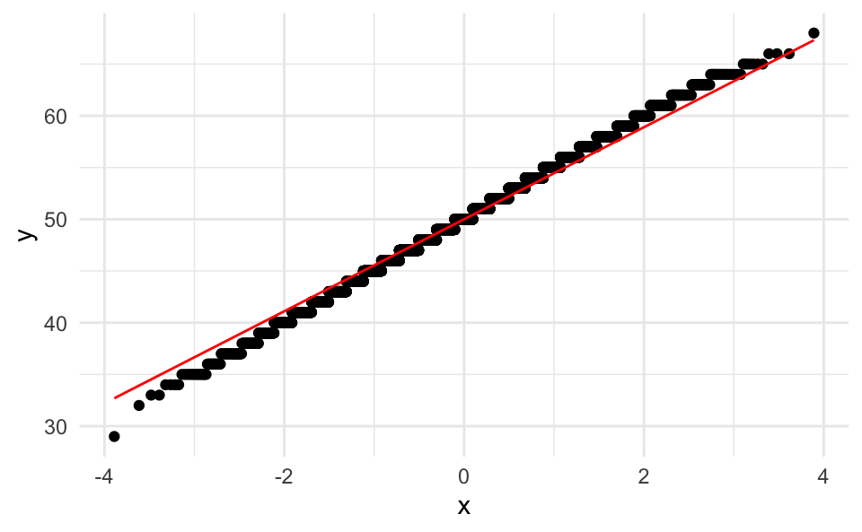

What is the sample size needed to estimate the proportion of the event “high quality study” with an error margin of ±5%, and a confidence level of 99%? Let’s assume the probability of the event is 50%, and we draw the studies independently?
Let’s simulate the width of a \(1-\alpha\) compatibility interval with a given margin of error \(E\) for varying samples sizes \(n_i\), where \(i = 1,...,N\), and \(N\) is the maximum sample size we can afford. We’ll assume indendently distributed and independent trials (iid).
Let’s further assume we are looking at a binary event \(X\) with a success \(x\) probability of \(Pr(X=x)=p\).
Let \(Y_k = \sum_1^i X_j\); think of \(Y_k\) as one sample of a given sample size, \(n_i\). Note that \(Y_k \overset{iid}{\sim} \mathcal{B}(n,p)\) (Binomially distributed).
Let’s draw \(K\) samples for each \(Y_k\), and dub the resulting statistic \(Z_i\). We’ll compute \(Z_i\) for each sample size \(n_i\), with \(i = 1,...,N\).
Finally, we’ll compute the arithmetic average of each \(Y_k\) and of \(Z_i\), for scale independency.
We’ll run this simulation in R, making use of the following packages:
library(tidyverse)
library(scales)
library(glue)
library(moments)N <- 1e04 # max. sample size
E <- .05 # error margin
p <- 1/2 # probability of event (success)
alpha = .01 # compatibility level
K <- 1e03 # repetitions per sample size
q <- abs(qnorm(p = alpha/2))
q # quantile in the normal distribution for alpha## [1] 2.575829Note that \(p=1/2\) is the maximum conservative assumption yielding the largest sample size.
df <- tibble(
i = 1:N,
estimate = NA,
se = NA,
lwr = NA,
upr = NA,
width = NA,
small_enough = NA
)Let’s draw \(N\) samples with increasing sample size from 1 to \(N=10^{4}\), each time with \(K=1000\) repetitions, assuming independent draws and a Binomial distribution with \(p=0.5\).
for (i in 1:N) {
# draw K "coin flip" samples of size i,
# with succcess propability p:
tmp <- rbinom(n = K, size = i, prob = p)
# compute succcess rate for each sample:
prop_success <- tmp/i
# compute success rate over all K samples:
df$estimate[i] <- mean(prop_success)
# compute standard error:
df$se[i] <- sd(prop_success)
# compute interval borders and width:
df$lwr[i] <- df$estimate[i] - q * df$se[i]
df$upr[i] <- df$estimate[i] + q * df$se[i]
df$width[i] <- df$upr[i] - df$lwr[i]
# check if intervals is as small as desired:
if (df$width[i] < 2*E)
{df$small_enough[i] <- TRUE} else {
df$small_enough[i] <- FALSE}
}Note that the binomial distributions converges against the normal distribution. For instance, let’s pick \(n_i=100\) and \(K=10^4\).
smple <- tibble(
estimate = rbinom(n = 1e04,
size = 100,
prob = p))
smple %>%
ggplot(aes(x = estimate)) +
geom_density()Let’s briefly check for normality, using a quantile-quantile plot:
ggplot(smple, aes(sample = estimate)) +
stat_qq() +
stat_qq_line(col = "red")
This check reassured us that this distribution is normal.
Add some stats for checking normality:
skewness(smple$estimate)## [1] -0.01740677kurtosis(smple$estimate)## [1] 2.952453Which nicely fits a normal distribution.
Also note that a linear transformation of a normal curve is still normal:
tibble(
estimate = rbinom(n = 1e04,
size = 100,
prob = p),
prop = estimate / 100) %>%
ggplot(aes(x = prop)) +
geom_density()What’s the minimum sample size \(n_{min}\) needed such that \(w \le 2E\), where \(w\) denotes the width of the compatibility interval?
n_min <-
df$width %>%
detect_index(~ .x <= 2*E)
n_min## [1] 357What’s the maximum sample size \(n_{max}\) needed such that \(w > 2E\)?
n_max <-
df$width %>%
detect_index(~ .x > 2*E, .dir = "backward")
n_max## [1] 419df %>%
filter(i > 30) %>%
ggplot(aes(x = i, y = width)) +
geom_line() +
scale_x_continuous(trans = log10_trans()) +
geom_hline(yintercept = 2*E, linetype ="dashed", color = "grey60") +
annotate("label", x = 100, y = .1, label = "2E") +
geom_vline(xintercept = n_max, linetype = "dashed",
color = "blue") +
geom_vline(xintercept = n_min, linetype = "dashed",
color = "red") +
annotate("label", x = n_max, y = .3,
label = glue("nmax={n_max}"),
color = "blue") +
annotate("label", x = n_max, y = .2,
label = glue("nmin={n_min}"),
color = "red") +
labs(x = "sample size (log)",
y = "margin of error",
subtitle = "for estimating the width of compatibility intervals",
title = "Simulating minimum sample sizes",
caption = glue("Alpha: {alpha}, desired E = {E}\n Each x-value depicts the average of {K} samples")) +
theme_minimal()The simulation implies that we need a sample size \(n\) of approx. around 357 to 419 to get a compatibility interval of width \(2E\) for an alpha level of \(1-\alpha=0.99\).
This post proposes a rough approach of attaining practical sample sizes when an analytical approach is not wanted or feasible. Several limitations should be put forward: One might want with finite populations; one might want to compare the simulation results with typical formulas; one might prefer different stopping rules.
Check out the following sources for related issues and more in-depth treatment: Landau and Stahl (2013), Schönbrodt and Perugini (2013), Maxwell, Kelley, and Rausch (2008), Arnold et al. (2011), Kruschke (2015).